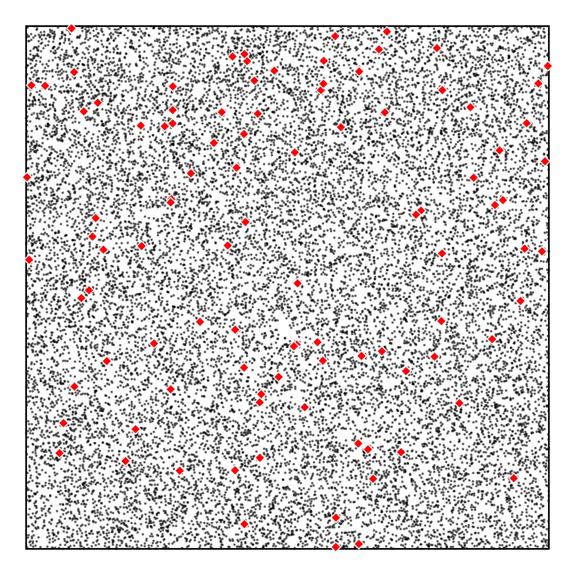
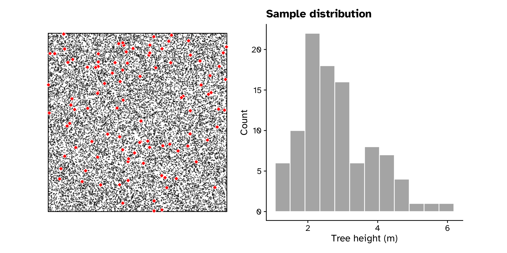

Uncertainty, sampling error and confidence intervals
Lecture 3
Iain R. Moodie
BIOB11 - Experimental design and analysis for biologists
Department of Biology, Lund University
2025-03-31
Tree heights in a forest
Tree heights in a forest
Simulated population
- Population \(N\) = 20000
- Sample \(n\) = 100
- Trees sampled at random using a random number generator to provide coordinates
- Closest tree to that coordinate was measured

Tree heights in a forest
Simulated population and sample(s)
Tree heights in a forest
Simulated population and sample(s)

Worked example
Tree heights in a forest
Sample distribution
Tree heights in a forest
Observed statistics
Tree heights in a forest
Uncertainty in our observed statistics
- If we took another random sample of 100 trees, it is unlikely that we would get exactly the same observed statistics
- We want to quantify this (sampling error)
- Problem: we (usually) only ever collect one sample
- Solution: generate more samples using information from our current sample
Tree heights in a forest
Generating a bootstrap sample
- To generate more “samples”, we use a re-sampling technique called the “bootstrap”
- For original sample of size \(n\), sample \(n\) values with replacement many times
- There are \(n^n\) new samples we can generate from one sample
- Important:
- the original sample must be representative of the population
- the original sample should be reasonably large (>>14, >30)
Tree heights in a forest
Generating a bootstrap sample
Tree heights in a forest
Generating a bootstrap sample
Tree heights in a forest
Calculate statistics from bootstrap sample
Tree heights in a forest
Calculate statistics from bootstrap sample
Tree heights in a forest
Use bootstrap sampling distribution to quanitify sampling error
- Calculate the standard error (SE)
- Standard deviation of the sampling distribution
- Calculate a confidence interval (CI)
- If we repeated our experiment many times and calculated a X% CI each time, the X% CI’s would include the “true” value X% of the time.
- SE method: Assume the sampling distribution is a normal distribution (bell-curve), and use a formula to find the values which contain the middle X% of the distribution (valid for means and some other statistics)
- Percentile method: The middle X% of the sampling distribution (valid for all statistics and shapes of sampling distributions*)
Tree heights in a forest
Calculate 95% CI from bootstrap sampling distribution
Tree heights in a forest
Calculate 95% CI from bootstrap sampling distribution
# A tibble: 1 × 2
lower_ci upper_ci
<dbl> <dbl>
1 2.62 3.01# A tibble: 1 × 2
lower_ci upper_ci
<dbl> <dbl>
1 0.862 1.15Tree heights in a forest
Unusual scenario: we have multiple samples
Tree heights in a forest
Unusual scenario: we know the populations true parameters
Tree heights in a forest
How well did our approach work?
- From single sample (usual scenario):
- Calculate observed statistics
- Generate bootstrap samples to create a sampling distribution
- Calculate 95% CI from bootstrap sampling distribution
- From multiple samples:
- Calculate observed statistics
- Make a sampling distribution from observed statistics in each sample
- Use that sampling distribution to calculate 95% CI
- Compare with population actual parameters
Tree heights in a forest
How well did our approach work?
Tree heights in a forest
How well did our approach work?
Tree heights in a forest
How well did our approach work?
CI: If we repeated our experiment many times and calculated a 95% CI each time, the 95% CI’s would include the “true” value 95% of the time.
Tree heights in a forest
How well did our approach work?
Confidence intervals
General workflow:
Get observed statistics:
specify()response (and explanatory) variable(s)calculate()observed statistic
Get CI:
specify()response (and explanatory) variable(s)generate()bootstrap samplescalculate()observed statistic in each sampleget_confidence_interval()
Confidence intervals
Examples: mean
iris_data <-
iris |>
filter(Species == "setosa")
iris_data |>
specify(response = Petal.Width) |>
calculate(stat = "mean")Response: Petal.Width (numeric)
# A tibble: 1 × 1
stat
<dbl>
1 0.246iris_data |>
specify(response = Petal.Width) |>
generate(reps = 10000, type = "bootstrap") |>
calculate(stat = "mean") |>
get_confidence_interval(type = "percentile")# A tibble: 1 × 2
lower_ci upper_ci
<dbl> <dbl>
1 0.218 0.276Confidence intervals
Examples: difference in means
iris_data <-
iris |>
filter(Species == "setosa" | Species == "versicolor")
iris_data |>
specify(response = Petal.Width, explanatory = Species) |>
calculate(stat = "diff in means", order = c("setosa", "versicolor"))Response: Petal.Width (numeric)
Explanatory: Species (factor)
# A tibble: 1 × 1
stat
<dbl>
1 -1.08iris_data |>
specify(response = Petal.Width, explanatory = Species) |>
generate(reps = 10000, type = "bootstrap") |>
calculate(stat = "diff in means", order = c("setosa", "versicolor")) |>
get_confidence_interval(type = "percentile")# A tibble: 1 × 2
lower_ci upper_ci
<dbl> <dbl>
1 -1.14 -1.02Confidence intervals
Examples: correlation
iris_data <-
iris |>
filter(Species == "setosa")
iris_data |>
specify(response = Petal.Width, explanatory = Petal.Length) |>
calculate(stat = "correlation")Response: Petal.Width (numeric)
Explanatory: Petal.Length (numeric)
# A tibble: 1 × 1
stat
<dbl>
1 0.332iris_data |>
specify(response = Petal.Width, explanatory = Petal.Length) |>
generate(reps = 10000, type = "bootstrap") |>
calculate(stat = "correlation") |>
get_confidence_interval(type = "percentile")# A tibble: 1 × 2
lower_ci upper_ci
<dbl> <dbl>
1 0.0842 0.535